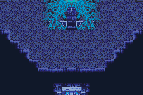
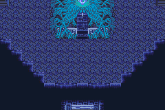

Final Fantasy V Advance (Japan) (Virtual Console)
SRAM 256K
Cartridge Identity
- Game Code
BZ5J(FamilyBZ5)- Header Title
FF5ADVANCE- Maker / Revision
GD/ rev0- ROM Size
- 8.0 MiB (8,388,608 B)
- Save Media
SRAM 256K- SHA-256
4e6b2c2b3270ef52f94190dd7df3e73d7c42aa45499b89dbfe0ba97f0c5e51e9
Screenshots


Observed Battery Save Layout
- Fill Byte & Active Size
0x00fill · 636–636 / 32,768 B active (entropy 4.48 bits/B)- Active Offset Ranges
0x0–0x1F,0x21–0x23,0x30–0x31,0x34–0x35,0x38,0x60–0x63,0x69–0x6A,0x70, +8 more (301 total)- ASCII Magic / Headers
FINAL FANTASY V ADVANCE- Observed Variable Regions
- 0 bytes across 0 spans: None
- Candidate Checksum/Counter Spans
- None
Regional Variants & Revisions (Family BZ5)
- Final Fantasy V Advance (Europe) (En,Fr,De,Es,It) (
BZ5P, 16 MiB) - Final Fantasy V Advance (Japan) (
BZ5J, 8 MiB) - Final Fantasy V Advance (USA) (
BZ5E, 8 MiB)